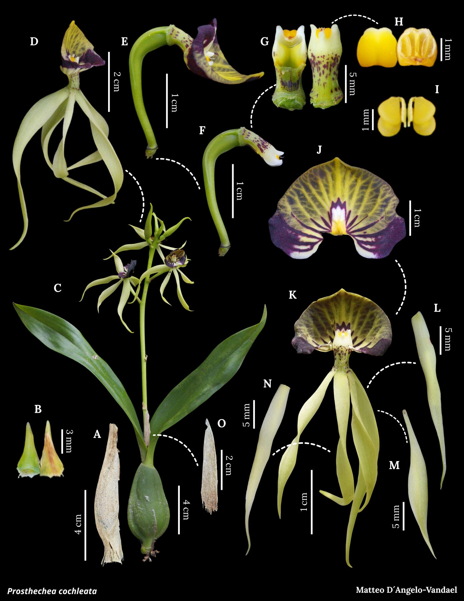
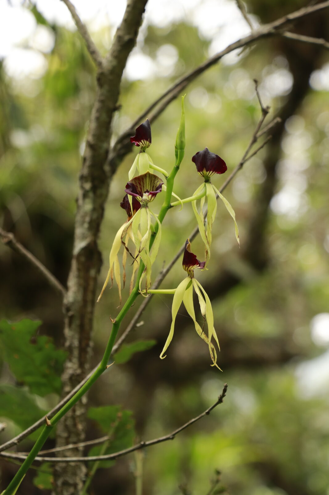

A distinctive epiphytic orchid with a broad Neotropical distribution, documented by Orchidarc as part of our living digital herbarium.


Prosthechea cochleata is one of the most recognisable members of the genus, with a shell-like lip and dark, narrow floral segments. Its broad range makes it useful for comparing how widespread orchid species persist across very different forest conditions.
Although not treated here as a local narrow endemic, P. cochleata remains part of the ecological fabric of humid orchid habitats. It helps document the broader community of epiphytes associated with cloud forests and mature trees.
This page is part of Orchidarc's digital herbarium: a growing archive of orchid species documented through fieldwork, photography, conservation monitoring and botanical plate production.
Even widespread epiphytic orchids depend on habitat continuity, host-tree survival and forest humidity. Monitoring common or widespread species helps establish a baseline for detecting ecological change.